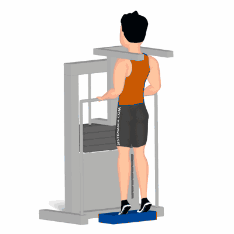

Panturrilha Vertical

Exercício para fortalecimento e hipertrofia dos músculos das panturrilhas, possuindo diversas variações. Realiza com o auxílio de um step e algumas anilhas posicionadas ao solo.
Ficha Técnica
Tipo: Musculação
Grupo Muscular: Perna
Aparelho: Nenhum
Músculos: Nenhum
Como realizar
- Ajuste o aparelho na altura desejada, na posição completamente ereta;
- Posicione os ombros abaixo das almofadas do suporte;
- Posicione os pés ligeiramente separados;
- Manter a coluna reta e abdome contraído;
- Empurre o seu corpo para cima elevando os calcanhares do chão;
- Concentre a força nos músculos da panturrilha;
- Eleve os calcanhares o mais alto que conseguir;
- Retorne à posição inicial de forma controlada e repita os movimentos.
 RC STORE
RC STORE